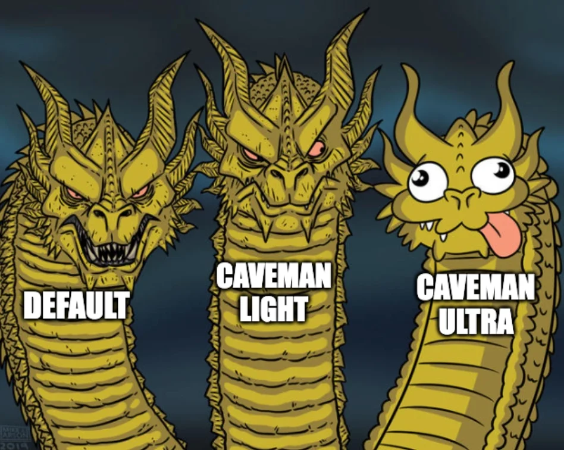

Workshops: Fundamentals matter more than ever!
This part aims to give you the vocabulary and theoretical background. Based on the provided methodology you will be able to make conscious choices about the design of your primitives.
graph LR
subgraph Intro["Introduction and theory"]
package-org["APM"]
dp["Design patterns"]
audit["Instrumentation audit"]
end
wrap-up["Wrap-up and resources"]
Intro --> wrap-up
We cover the following:
- The tools that help with distribution, portability, validation, and governance.
- Design patterns for primitives structure and content.
- A repository audit methodology tailored for research and PoC repositories.
Why even use APM?
Before apm the skills were published per harness. Moreover, the installation was either manual download or via npm. Considering that nowadays repositories with skills can easily reach 100k+ github stars they definitely deserve a customized tool for managing them. This section goes over the reasons why APM is worth using as well as how to define the most frequeltly used primitives.
The irony is that apm has less than 4k stars and remains a niche while skills like grillme go viral. We highly recommend to leave a star for the APM repo and the other resources we mention during the tutorial!
Note: The most well known primitive are skills, bacause they ususally work as an entry point to more complex workflows. However, there are more of them: agents, instructions, hooks, memory...
Cross harness compatibility
This is especially cool for students that juggle several subscriptions and switch the LLM provider as soon as tokens are burned out. APM allows to make it smooth.
graph LR
subgraph Harnesses
H_A(Harness A)
H_B(Harness B)
H_C(Harness C)
end
subgraph User
Human_A["fa:fa-user User"]
end
APM[APM Package]
Human_A --> H_A
Human_A --> H_B
Human_A --> H_C
APM --> Human_A
Another scenario where cross harness compatibility comes in handy is a team where different people use different harnesses. Maybe less common in companies, but for sure can happen often in academia.
graph LR
subgraph Harnesses
H_A(Harness A)
H_B(Harness B)
H_C(Harness C)
end
subgraph Your dream team
Human_A["fa:fa-user User A"]
Human_B["fa:fa-user User B"]
Human_C["fa:fa-user User C"]
end
APM[APM Package]
Human_A --> H_A
Human_B --> H_B
Human_C --> H_C
APM --> Human_A
APM --> Human_B
APM --> Human_C
It is interesting a tool making it easier to switch between harness providers is supported by Microsoft, the company behind Github Copilot.
Layers
with APM setting up a layered package system becomes smooth. We can collaborate with different teams and individuals and depending on the project have access to different packages, some of them can be shared.
flowchart TB
subgraph Company["Company packages"]
direction TB
subgraph Organization["Organization packages"]
direction TB
subgraph Team["Team packages"]
direction TB
Personal["Personal packages"]
end
end
end
In both industry and academia it is easy to find examples of workflows that are common (like code review) and things that are highly subjective and personal (context of my project, my preferences regarding code, models, format of output, used harness).
Governance
graph LR
Human_A["fa:fa-user User A"]
subgraph Governance
Audit
Scan
more["and more..."]
end
APM[APM Package] --> Governance
Governance --> Human_A
Another reason that you might want to use APM is the ability to better validate, audit the packages you are using. We do not focus on this are during the workshops.
Reproducibility
graph TD
subgraph Envs[" "]
EnvA
EnvB
end
Manifest["manifest"] --> Lockfile["lockfile"]
Lockfile --> EnvA["Environment A"]
Lockfile --> EnvB["Environment B"]
EnvB <-- "parity" --> EnvA
The exact state of the primitives used can be also reproduced. APM has all the elements of a traditional package manager
What does an APM package contain?
Let's start with a quick overview of the files, along with a Python analogy. The table below assumes the user knows what uv dependency manager is.
| APM component | description | Python analogy |
|---|---|---|
.apm/ dir |
Stores the raw primitives (skills, agent personas, etc.). | src/ dir |
apm.yml |
The dependencies definition file. | pyproject.toml |
apm.lock.yml |
The exact description of dependencies. | uv.lock |
user-name/repo-name |
Package stored in a GitHub repository. | External package stored on PyPi. |
apm_modules/ |
Stores all transitive dependencies. Lands here when running apm install. Should be gitignored. |
.venv/lib/python3.x/site-packages |
.agents/, .github/skills etc. |
Place where primitives are deployed (exact location depends on harness). | .venv/lib/python3.x/site-packages |
Package layout
You have basically two main choices when designing a package: single skill package or a collection of skills. There are of course more options, but this two are the mostly used. See package types for more detaisl.
Skills structure
Every skill should follow this directory structure:
.apm/skills/
+-- your-skill/
+-- SKILL.md # required: the skill body
+-- scripts/ # optional: executable scripts (usually python or bash)
+-- references/ # optional: context the skill loads on demand (e.g. how fix a often occuring bug)
+-- assets/ # optional: templates, code listings, images, fixtures to be reused
+-- examples/ # optional: sample inputs and outputs
Example frontmatter
--- name: top-stacks description: Use when user wants the best or most relevant Substack posts for a topic, including requests for reading lists or sources that answer specific questions. Return a ranked top five table of directly linked Substack articles with concise one line relevance notes. DO NOT use it for general web research or recommendations not related to Substacks. ---
Notice that:
- negative examples are mentioned (less important if you have small number of skills, more important if you have 50+ skills for eliminating conflicts)
Use when ...is a good way to start your description.- Pay attention to your description, if generated with LLMs it can decrease the user experience.
- Changing the description is a breaking change.
Add agent persona
| Key | Required |
|---|---|
name | recommended |
description | yes |
model | optional |
tools | optional |
color | optional |
handoffs | optional |
Add a instruction file
| Key | Required | Purpose |
|---|---|---|
description | yes | One-line summary; used in compiled context indexes |
applyTo | yes for instructions | Glob (or comma-separated globs) the rule binds to |
Drawbacks of using instrucitons
- Very agressive loading
- People tend to write very long instructions
Install a package
Usually I install packages per project using:
apm install user-name/repo-name
For skills that I use across projects all the time I install them globally. Thanks to that I avoid setting this up for every project. Usually I pin the packages using the commit hash to avoid drift.
apm install -g user-name/repo-name
Maintanance
- Run
apm auditto verify divergence between deployed primitives and your lock file. - Run
apm prune. This command removes installed packages fromapm_modules/that are neither declared inapm.ymlnor retained as transitive nodes inapm.lock.yaml. The command also removes their deployed integration files and updates the lockfile. apm self-update. Update apm to latest version. We recommend to update frequently as the tool is activelly developed.
Design patterns
Design patterns are typical solutions to commonly occurring problems in software design. They are like pre-made blueprints that you can customize to solve a recurring design problem in your code. You may know some famous patterns like Strategy, Facade or Factory.
It turns out that there is an equivalent concept for agentic primitives (which also strengthens the idea that we should treat agentic primitives as code, not as part of documentation).
graph LR
classical["Classic design patterns"]
agentic["Agentic design patterns"]
classical -- "Concepts transferred" --> agentic
An agentic design pattern is a reusable solution to coordination challenges in LLM driven systems where execution paths are decided at runtime rather than hardcoded in advance. While traditional software patterns assume deterministic components and static control flow, agentic patterns coordinate probabilistic models that dynamically invoke tools, revise intermediate results, or hand off work to other agents.
Only selected architectural patterns and anti-patterns for agentic workflows are presented. For the full pattern catalogue see the resources used.
Some of the design pattern names may seem like buzzwords and overwhelming jargon at first. But after familiarizing yourself with them, they provide a robust vocabulary making conversations richer, going beyond "I told Claude to make it work, make no errors."
Sources: Alexander Shvets, "What's a Design Pattern?", Refactoring Guru; Molisha Shah, "What Are Agentic Design Patterns? 2026 Pattern Catalog", Augment Code, 2026.
Tiers of patterns
graph TD
R["Refactor patterns"]
A["Tier 3: architectural patterns"]
subgraph Tier2["Tier 2: design patterns"]
C["Creational"]
S["Structural"]
B["Behavioral"]
end
H["Tier 1: harness idioms"]
P["Tier 0: substrate primitives"]
R --> A
A --> C
A --> S
A --> B
C --> H
S --> H
B --> H
H --> P
Patterns from Tier 3 are composed of Tier 2 patterns. For example, the A1. PANEL is represented as:
- B1 (Fan-out and synthesizer): coordinates fan-out topology and synthesis.
- N × C2 (Persona preload): instantiates N specialized review lenses in isolated contexts.
- S4 (Validation decorator): gates the synthesized verdict.
- B4 (Plan memento): persists the deliberation outcome to storage.
| Pattern family | Primary responsibility |
|---|---|
R (Refactor) | Module boundary hygiene, decomposing monoliths |
A (Architectural) | Multi-agent execution graphs, macro flows |
C (Creational) | Context isolation, persona scoping, lazy assets |
S (Structural) | Deterministic tool bridges, validation gates |
B (Behavioral) | Dynamic coordination, attention anchoring, plan memory |
Primitive relations
APM packages structure capabilities into distinct relation types:
graph TD
subgraph Package["Local package"]
Inline["Inline skill"]
SiblingSkill["Sibling skill"]
Asset["Sibling asset"]
Subagent["Sibling subagent"]
end
External["External package"]
User(["User"]) -->|"Invokes"| Inline
User -.->|"Direct dispatch"| SiblingSkill
Inline -->|"Delegates to"| SiblingSkill
Inline -->|"Loads on demand"| Asset
Inline -->|"Spawns child thread"| Subagent
Subagent -->|"Runs CLI or script"| Tools["System tools"]
External -.->|"Reused via apm.yml"| Inline
- Inline: Content and logic that live directly within the primitive's own file, executing in the active session context with no dependency edges.
- Sibling: Primitives (such as specialized skills, lazy assets, or child subagents) colocated in the same local package, referenced on demand or dispatched independently without crossing distribution boundaries.
- External: Upstream packages pulled from external repositories and pinned via
apm.yml, crossing distribution boundaries for multi-project reuse. - Other (Runtime tool affordances): Deterministic execution bridges (CLI utilities, compilers, scripts) that are runtime mechanisms rather than prompt primitives, invoked by subagents to interact with the system environment.
Pattern summary
| Pattern | Category | Classical analog | Solves | Prevents |
|---|---|---|---|---|
C1. LAZY ASSET |
Creational | Lazy Initialization | Heavy templates loaded on every turn | EAGER BLOAT |
C2. PERSONA PRELOAD |
Creational | Constructor / Scoped Object | Model drifting or rewriting out of scope | UNPROMPTED DRIFT |
C3. THREAD SPAWN |
Creational | Factory Method / Process Isolation | Verbose output flooding the primary context | FAN-OUT-IN-ONE-CONTEXT |
S3. ORCHESTRATOR FACADE |
Structural | Facade | Fragmented multi-step execution | GOD MODULE, STUB ORCHESTRATION |
S4. VALIDATION DECORATOR |
Structural | Decorator / Assertion Gate | Silent failures passing downstream | WRAPPING WITHOUT BLOCKING |
S7. DETERMINISTIC TOOL BRIDGE |
Structural | Adapter / HAL | LLM guessing build status or facts | TOOLLESS ASSERTION |
B2. CONDITIONAL DISPATCH |
Behavioral | Strategy | Loading every rule branch up front | ALL-BRANCHES-LOADED |
Anti-patterns reference
| Anti-pattern | Description | Why it fails | Countermeasure |
|---|---|---|---|
GOD MODULE |
Single prompt handling all tasks | Attention degradation, untestable | R1. SPLIT + S3. ORCHESTRATOR FACADE |
ALL-BRANCHES-LOADED |
Preloading every rule and edge case | Wasted input tokens, prompt bloat | B2. CONDITIONAL DISPATCH |
FAN-OUT-IN-ONE-CONTEXT |
Running verbose CLI logs in main chat | Context window pollution, cache breaks | C3. THREAD SPAWN |
EAGER BLOAT |
Inlining large templates in skill body | High token cost per turn | C1. LAZY ASSET |
STUB ORCHESTRATION |
Wrapper without sequencing or gates | Cascading silent failures | S4. VALIDATION DECORATOR |
TOOLLESS ASSERTION |
LLM claiming success without tool check | Hallucinated facts and false positives | S7. DETERMINISTIC TOOL BRIDGE |
WRAPPING WITHOUT BLOCKING |
Logging errors but continuing anyway | Compounding failures downstream | Halting gates on non-zero exit status |
UNPROMPTED DRIFT |
Agent altering text or code outside scope | Corrupted manuscript or codebase | C2. PERSONA PRELOAD with scoped tools |
Fun fact: Caveman
Caveman project proposed the idea of saving tokens by making the agent talk like a caveman. Thus simplifying the language and cutting tokens aggressively.

The behavioral patterns formalize the Caveman concept, especially for agent-agent communication. The Caveman channel (B14b/c) uses high-density briefs and structured JSON receipts:
graph TD
Parent["Parent orchestrator"]
Child["Child subagent"]
Parent -- "Telegraphic brief (~80 tokens)" --> Child
Child -- "Runs deterministic tool" --> Child
Child -- "JSON receipt (~40 tokens)" --> Parent
- Spawn brief: Drops articles and politeness; retains exact paths, commands, and constraints.
- Receipt: Minimal JSON object (
status,artifact_path,error_digest) keeping parent context clean.
Source: Julius Brussee, "caveman-code", GitHub.
Code instrumentation audit of a research codebase
The justification for messy research code is shrinking. We can define standards before prototyping instead of wasting time on review, fixing, and debugging.
Failure mode
sequenceDiagram
actor ENG as Engineer
actor SME
participant EXP as Experiment implementation<br/>(no standards)
participant REV as Review
Note over ENG: Present, but defines no standards
SME->>EXP: Implements experiment
EXP->>REV: Messy research code
Note over REV: Slow review, fixing, debugging
REV-->>SME: Rework requests
REV-->>ENG: Untangle and rewrite
EXP-->>EXP: Domain insights lost in prints
ENG->>ENG: Fixes the same issues again, no compounding
This is the default mode. Write code first, correct if required.
Success scenario
sequenceDiagram
actor ENG as Engineer
box SME context
actor SME
participant EXP as Experiment implementation<br/>(standards applied)
end
participant REV as Review
ENG->>EXP: Defines standards before prototyping<br/>(logger, project structure, abstract classes, typing)
SME->>EXP: Implements experiment, standards enforced by default<br/>(logger instead of print)
EXP->>REV: Production ready code
Note over REV: Faster review, no cleanup
EXP-->>EXP: Domain insights
ENG->>ENG: Improves standards
Code is written in alignment with team standards. SMEs who do not care as much about coding can benefit from the abstractions and tooling without learning every detail by heart.
A researcher aiming to obtain experiment results can be viewed as an SME. We can apply the same rule to research projects: instrument the codebase beforehand, accelerate research and development, and avoid paying the cost later on right before a conference submission.
Step 1: List your conventions
This step is often a bottleneck because conventions are not yet defined.
What are the repeatable steps in almost every research repository?
- Research lab standard: repository setup.
- Justifying each design choice (a research log). Record every experiment: goal, hypothesis, method, results, analysis, and next steps, including failures.
- Code audit before release: removing unused experiments, dead comments, and duplicated code.
- Code, dataset, model, and paper release. Doing this manually incurs a recurring time cost; automation is a one-time cost.
- Creating a demo on Hugging Face or a research project website (using templates like this academic project page template as a baseline).
Anti-patterns specific to research repositories
- Missing requirements.txt or lock file, with an unspecified Python version.
- Duplicated code (to reduce it, enforce the rule: use, don’t reimplement), often due to missing or insufficient abstractions.
- Overused type hints.
- Stale notebooks that are no longer relevant to ongoing development.
- Dead code.
- Test files scattered across source code modules.
- Flat project structure (avoiding moving modules like
models/,pipeline/,utils/, etc. tosrc/). - Outdated README or documentation.
Some of these anti-patterns were a necessary evil in rapid research prototypes. Agents can now maintain them smoothly, provided standards are defined.
Step 2: Classify each convention item
Once existing conventions are listed, classify them. Where do they come from? Are there existing artifacts that we can reuse? Do we need to codify word-of-mouth knowledge first?
| Location | Meaning | Agent visibility |
|---|---|---|
| In heads | Known by team members, never written down | Completely invisible |
| In code | Expressed in types, naming, structure | Visible if in context window |
| In literature | Preexisting papers, datasets, models, terminology that may impact our research | Invisible unless explicitly loaded |
| Lab/conference guidelines or reviewer feedback | Implicit conventions, known by lab members or documented outside the repository | Invisible unless explicitly loaded |
| In data / experiment tracking tools | Formats, sources, targets, and schemas | Invisible unless explicitly loaded |
| In docs | Repository documentation or external guides (e.g., Athena cluster docs) | Invisible unless explicitly loaded |
Step 3: Rank by failure cost
- Critical: Blocks experiment progress, slows down collaboration between team members, makes debugging harder, and slows iterations. Completed experiments cannot be justified without repeating the entire reasoning process to understand why they were run. Data leakage, silent non-determinism, and broken train/test splits.
- High: Leads to reproducibility issues for other researchers. Notebook sprawl, duplicated experiment code, and bloated repositories (burning tokens due to exploding repository size).
- Medium: Running additional experiments after review taxes the team by requiring a return to a messy codebase.
- Low: Style preferences that do not affect correctness.
Issues common in enterprise software (such as technical debt, security vulnerabilities, and production outages) are rarely the primary concern for typical research repositories.
Step 4: Map each item to a primitive type
| If the knowledge... | It belongs in... | Concrete research example |
|---|---|---|
| Is a rule scoped to specific files/directories | An instruction file | Jupyter notebook conventions |
| Requires specialist expertise or a specific model | An agent configuration | Stronger model for experiment design, cheaper model for implementation |
| Applies across files and needs a decision framework | A skill | Implementing a new model for evaluation |
| Defines a repeatable multi-step process | A prompt | Releasing code, models, datasets, or packages |
| Records a decision, trade-off, or historical fact | A memory file | Design decision justifications, research log |
| Specifies a feature with components and success criteria | A specification | Experiment plan |
| Defines an automated response to a development event | A hook | Automated paper, model, or dataset release |
Step 5: Write your starter set
Implement the first primitive. Start small and add primitives gradually.
The end! Attribution, further resources and next steps...
That was it! Thank you for participating in the workshops.
In this section we list the sources used in this tutorial as well as further steps that might interest you. We hope you have enjoyed the workshops, please consider to provide feedback via the form
This workshops were inspired by the great book Agentic SDLC by Daniel Meppiel.
Did we miss anything cool in this list? Feel free to open an issue!
- APM (Agentic Package Manager). We really recommend to check out the author's Daniel Meppiel and maintainer's Serio Sisternes GitHub profiles.
- Agentic Software Development Life Cycle Handbook
- waza tool for benchmarking skills.
- Tools for cleaning so called dead code: skylos, vulture and other.
- gh-aw: github agentic workflows, it is basically github actions but for agents.
Genesis
- Genesis design patterns catalogue.
- It is wrapped into a skill that helps with desingning your agentic primitives.
- Hint 1: Read the catalogue first, the skill uses a lot of jargon. You will benefit way more if you are familiarized with the concepts before using it.
- Hint 2: Ask directly for using APM.
Thank you for joining the workshops
If you are around, come join me at the Darmstadt Weihnachtsmarkt to spend some time together and discuss both technical and non-technical stuff in a more relaxed atmosphere.
Enjoyed the session? Share your feedback via the form
Warm winter wishes, Jan